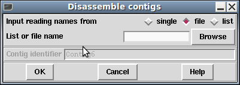

While Disassemble Readings is capable of removing entire contigs, it is inefficient for this task as it has a lot of additional house-keeping to perform.

Delete Contigs should be used when we wish to remove entire contigs. Be careful not to accidentally choose this over disassemble readings as even when giving a single sequence name, this function will interpret it as a request for removing all other sequences in that contig too.
There is no Undo feature, so backups are advised before hand.